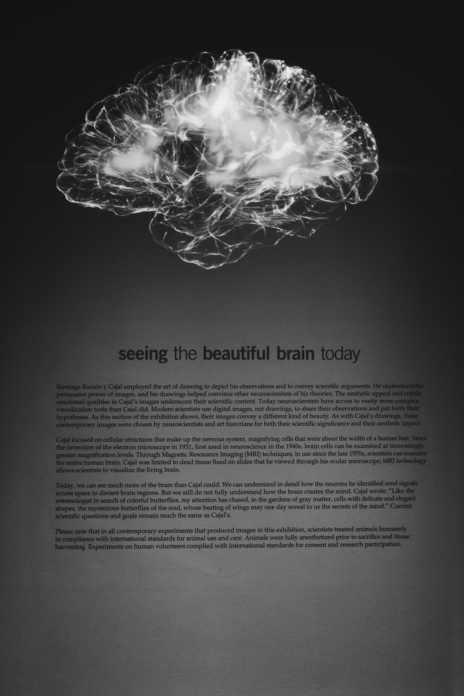

| Jeff | King |
| Juri | Queen |
| Baby | Future |
There are a number of tests and procedures to diagnose conditions involving the nervous system. In addition to the traditional X-ray, a specialized X-ray called a fluoroscopy examines the body in motion, such as blood flowing through arteries, according to the NIH.
Other standard neurological exams include an MRI (magnetic resonance imaging), CT scan, and an electroencephalogram (EEG), which records the brain's continuous electrical activity. Positron emission tomography (PET) is a procedure that measures cell or tissue metabolism and brain activity to detect tumors or diseased tissue or tumors, the NIH noted.
A spinal tap places a needle into the spinal canal to drain a small amount of cerebral spinal fluid that is tested for infection or other abnormalities, according to the NIH. 